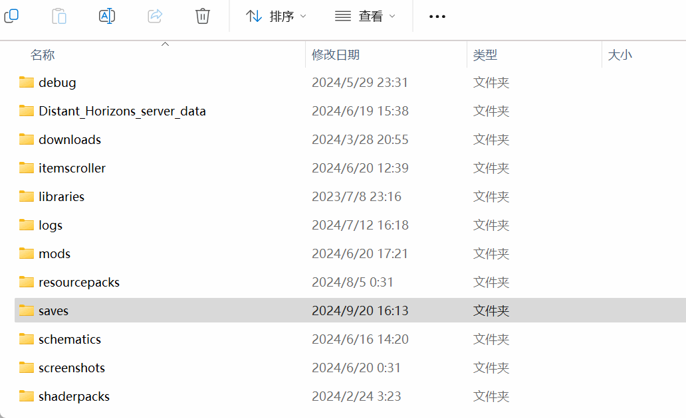
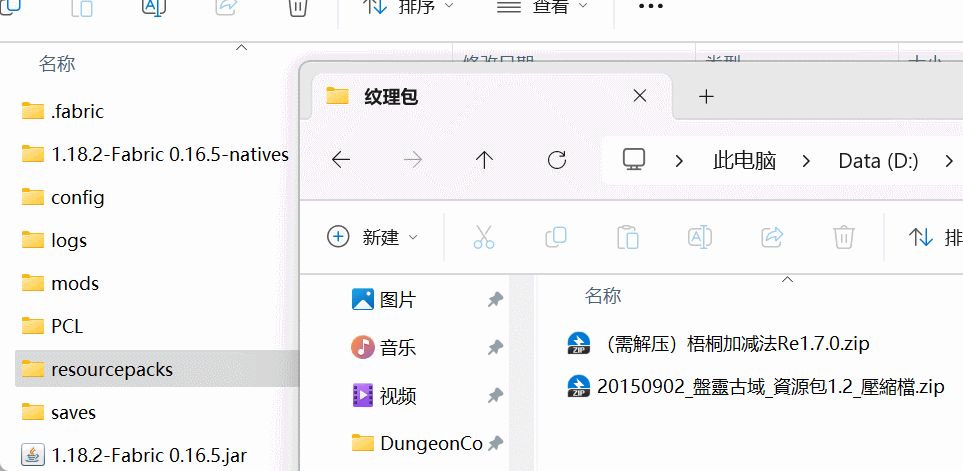

存档、资源包导入
一、存档
在Minecraft Java版中，存档的存放和读取位置是在 saves 文件夹里的，里面就有对应世界的存档文件夹，一个存档就对应一个文件夹。
该存档里必须要有以下文件才能够被游戏识别：
- saves
|- new_world <-- 这是你的存档
|- data
|- entities
|- poi
|- region
|- level.dat
|- level.dat_old
|- session.lock
|- uid.dat
大部分情况下，下载到的存档都是压缩文件，我们将里面的文件解压，放到 saves 文件夹里的 一个空文件夹里。这样游戏就可以读取该存档世界了。（当然如果压缩包内就有一个文件夹，就直接把它拖进来就行了）

二、资源包
资源包（或称 材质包、纹理包）的存放位置在 resourcepacks 文件夹里，与存档不同的是，资源包正常无需解压，只需将其放至 resourcepacks 文件夹里就可以了。

仍有不理解的地方或问题？在文章的相应位置评论留言↑↑↑
或在Github上反馈文章问题。